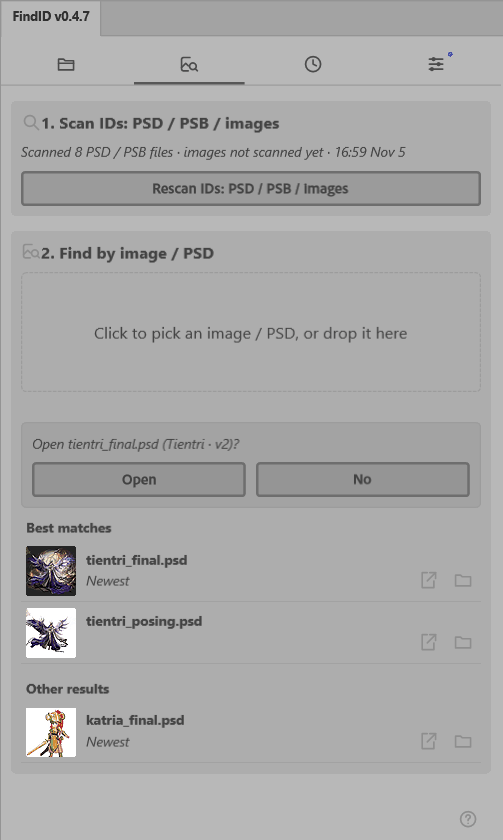
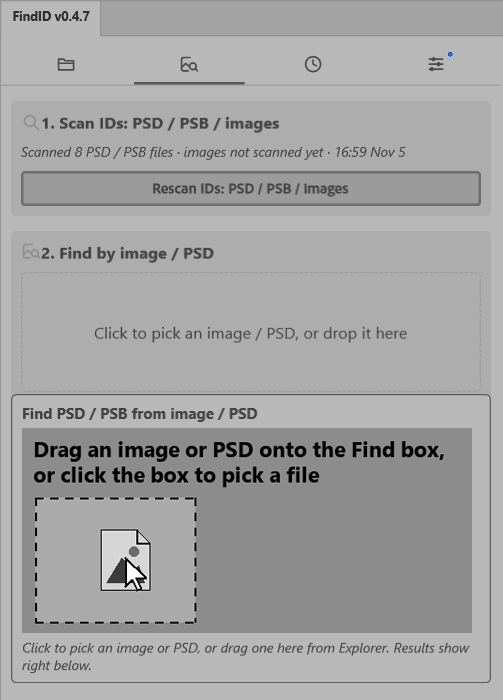
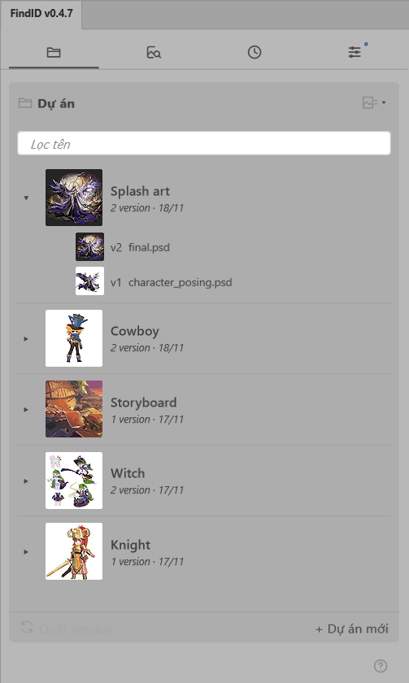
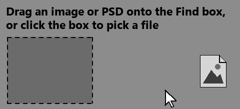

Plug-in for Adobe Photoshop®
Plugin cho Adobe Photoshop®
Find & manage your PSDs, simple and easy.
Tìm – Quản lý PTS đơn giản & dễ dàng.
For Windows 10 / 11 · Adobe Photoshop® 2023 or laterCho Windows 10 / 11 · Adobe Photoshop® 2023 trở lên
For macOS · Adobe Photoshop® 2023 or laterCho macOS · Adobe Photoshop® 2023 trở lên
Version 0.4.7 (testing)
Bản 0.4.7 (đang thử nghiệm)
Sample picture, exported from a PSD
Ảnh mẫu, xuất từ một file PSD


How FindID works
FindID hoạt động thế nào
Photoshop keeps a small block of information inside each file, in a standard called XMP. FindID writes an ID there. When you Save As, Save a Copy or Save for Web to a JPG or PNG, the new file keeps the ID of the PSD it came from. FindID reads these IDs quickly in every folder you choose, so a PSD and the images made from it are grouped together even when they sit in different folders. Images without an ID (Export As, Quick Export, screenshots) are matched by their pixels instead.
Photoshop lưu một phần thông tin nhỏ bên trong mỗi file, theo chuẩn XMP. FindID ghi một mã ID vào đó. Khi bạn Save As, Save a Copy hay Save for Web ra JPG, PNG, file mới giữ mã của PSD gốc. FindID đọc nhanh các mã này trong mọi thư mục bạn chọn, nên PSD và các ảnh xuất ra từ nó được xếp chung dù nằm ở thư mục khác nhau. Ảnh không có mã (Export As, Quick Export, ảnh chụp màn hình) thì được so bằng điểm ảnh.
FindID helps you
FindID sẽ giúp bạn
01
Find the source PSD from an image
Tìm PSD gốc từ ảnh
Drop an exported image or a PSD on the Find box. Best matches come first, each with its project and version (picture at the top of this page). Click to open it.
Thả ảnh đã xuất hoặc một PSD vào ô Tìm. Kết quả phù hợp nhất hiện trước, kèm dự án và version (hình đầu trang). Bấm là mở.


02
Every version in the right project
Version nào cũng đúng dự án
Save As a new name for each version and it lands on top of its project, with a thumbnail. Rename, move or copy the PSD and it still knows where it belongs.
Mỗi version mới thì Save As tên mới, version tự nằm trên cùng dự án, kèm ảnh nhỏ. Đổi tên, dời hay chép PSD thì file vẫn biết mình thuộc dự án nào.


03
Go back any step
Quay lại bước bất kỳ
History lists every change to your projects. Click a step to go back to it, click a faded row to redo.
Lịch sử ghi mọi thay đổi trong dự án. Bấm một bước để quay về, bấm dòng mờ để làm lại.


- Untracked filesFiles in no project wait in the Untracked group. Right-click one and choose Track.
- File chưa theo dõiFile chưa thuộc dự án nào nằm trong nhóm Chưa theo dõi. Chuột phải, chọn Theo dõi.
- Help on every buttonRest the mouse on a button or row to see what it does, with a short moving picture.
- Giải thích trên mọi nútĐể chuột lên nút hay dòng để xem nó làm gì, kèm hình động ngắn.
How Find works
Cách Tìm hoạt động
- When you save a version, FindID writes a small ID into the file info (XMP). Layers and pixels are not touched.
- Images you save from that version with Save a Copy, Save As or Save for Web carry the same ID. Export As and Quick Export do not.
- In Settings, add the folders that hold your files. In the Find tab, click Scan IDs once.
- Drop an image on the Find box. With an ID, its PSD shows up straight away. Without one (a cropped or resized picture), FindID compares it with small previews of your PSDs and shows the closest.
- Khi bạn lưu một version, FindID ghi một ID nhỏ vào phần thông tin file (XMP). Layer và điểm ảnh không bị đụng tới.
- Ảnh lưu từ version đó bằng Save a Copy, Save As hay Save for Web mang cùng ID. Export As và Quick Export thì không.
- Trong Cài đặt, thêm các thư mục chứa file. Trong tab Tìm, bấm Quét ID một lần.
- Thả ảnh vào ô Tìm. Ảnh có ID thì PSD hiện ngay. Ảnh không có ID (đã cắt hay đổi cỡ) thì FindID so với ảnh xem trước nhỏ của các PSD và hiện file giống nhất.
All of this runs on your computer. FindID uploads nothing.
Tất cả chạy trên máy bạn. FindID không tải gì lên mạng.


The same moving picture plays in the panel's Help box.
Hình động này cũng chạy trong khung giải thích của panel.
Get FindID
Tải FindID
Install from Adobe Creative Cloud Marketplace or buy here on findid.app. Versions and install steps are on the Download page.
Cài từ Adobe Creative Cloud Marketplace hoặc mua ngay tại findid.app. Các phiên bản và cách cài có ở trang Tải về.
Questions
Câu hỏi
Does FindID change my PSD files?
It only adds a small ID to the file info (XMP) when you save. Layers and pixels are not touched.
FindID có sửa file PSD của tôi không?
Nó chỉ thêm một ID nhỏ vào phần thông tin file (XMP) lúc bạn lưu. Layer và điểm ảnh không bị đụng tới.
Is my artwork uploaded anywhere?
No. FindID works on your computer only. Details: Privacy policy.
Tranh của tôi có bị gửi đi đâu không?
Không. FindID chỉ chạy trên máy bạn. Chi tiết: Chính sách riêng tư.
Which images can it trace back?
Images saved with Save a Copy, Save As or Save for Web carry the ID and are found straight away. Others, such as Export As or a cropped copy, are compared by look and the closest PSD is shown.
Ảnh nào thì tìm lại được PSD?
Ảnh lưu bằng Save a Copy, Save As hay Save for Web mang ID nên tìm ra ngay. Ảnh khác, như Export As hay bản đã cắt, được so theo hình và hiện PSD giống nhất.
How much does FindID cost?
1.99 USD, one-time purchase, on findid.app. On the Adobe Store the price is shown there. Details: Pricing.
FindID giá bao nhiêu?
1.99 USD, mua một lần, tại findid.app. Trên Adobe Store thì giá hiện ở đó. Chi tiết: trang Giá.
What do I need?
Windows 10 or 11, or a Mac, with Adobe Photoshop® 2023 (24.0) or later. On a Mac, FindID installs through the Creative Cloud app.
Cần máy thế nào?
Windows 10 hoặc 11, hoặc máy Mac, cùng Adobe Photoshop® 2023 (bản 24.0) trở lên. Trên Mac, FindID cài qua ứng dụng Creative Cloud.
Support
Hỗ trợ
Email support@findid.app in English or Vietnamese. Include your FindID and Photoshop versions and what you clicked; a screenshot of the panel helps. More on the Support page.
Email support@findid.app bằng tiếng Việt hoặc tiếng Anh. Ghi bản FindID, bản Photoshop và bạn vừa bấm gì; ảnh chụp panel sẽ giúp nhiều. Thêm ở trang Hỗ trợ.